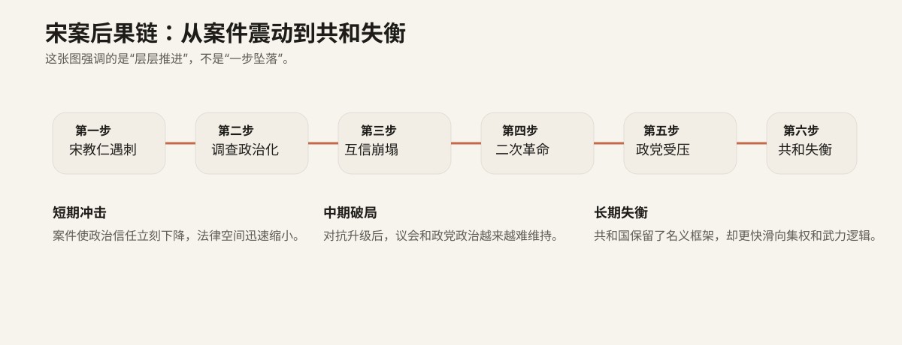

为什么可以把它叫作“转折点之一”
历史上的“转折点”并不等于“唯一原因”。真正的转折点，是指某个事件把原本尚未定型的局面迅速推向另一条轨道，让某些可能性明显收缩，让另一些可能性明显扩张。就宋教仁案而言，它之所以被频繁视为民初共和的重要节点，并不是因为它单独决定了一切，而是因为它恰好发生在制度实验最接近落地的时候，又恰好以暴力方式打断了这场实验。
宋案之前，民初政治虽然已经危机四伏，但至少还存在一条看得见的制度化路径：国民党通过国会选举取得优势，宋教仁试图把多数党组阁、责任内阁与议会监督变成现实操作。宋案之后，这条路径迅速收缩，互信崩塌、调查政治化、对抗升级，政治越来越难在制度内解决。也正是在这个意义上，宋案成为一个真正的转折点：它不是凭空创造危机，而是把原本就存在的制度脆弱性一下子推向公开、剧烈和不可逆的状态。
宋案之前与之后，政治可能性发生了什么变化
宋案之前仍然存在的可能性
- 国会多数有机会转化为责任内阁。
- 政党竞争仍可能成为分配行政权的合法路径。
- 总统权与议会权的冲突，理论上还可以通过制度和谈判调节。
- 新共和国仍保有一丝“法律解决高于武力解决”的期待。
宋案之后迅速增强的现实
- 国民党与北京政府之间互信快速崩塌。
- 案件调查未能稳定吸收危机，反而加剧政治对抗。
- 法律与议会空间缩小，武力与非常手段的重要性上升。
- 民初共和更快滑向总统集权、政党受压与南北对立。
这组前后变化非常关键。它告诉我们，宋案并不只是“多了一桩政治暗杀”，而是让制度化解决政治冲突的能力显著下降。换句话说，宋案对历史的影响，不只体现在谁死了，而体现在哪些政治办法开始变得更不可行。
后果不是一跳到底，而是层层推进
信任危机立刻扩大
宋教仁遇刺后，线索与舆论迅速把矛头指向袁系关键人物。无论最终责任链如何界定，政治后果都非常明确：国民党及南方势力对北京政府的信任急剧下降，案件很快超出司法层面，变成新的政治裂缝。
议会政治空间快速缩小
案件调查受阻、善后大借款绕过国会、总统选举争议加剧，使得国会和政党竞争越来越像一种被动挨打的制度外壳。二次革命爆发后，这种空间进一步被压缩，责任内阁的实践基本失去现实基础。
共和规则更快退向名义化
宋案并未直接制造后来的全部动荡，但它显著加快了民初共和从制度尝试走向强人政治的速度。随着国会被压制、政党受打击、袁世凯集权上升，共和越来越只剩国号和文本，而越来越难以构成真正的政治规则。
最适合做成流程图的一条后果链
宋教仁遇刺 → 调查迅速政治化 → 国民党与北京政府互信崩塌 → 善后大借款与总统选举争议加重制度失衡 → 二次革命爆发并失败 → 国民党与国会进一步受压 → 总统集权与武力政治上升。
这条链之所以重要，是因为它把事件、制度和后果连在了一起：不是先有一个“无意义的案件”，然后才有人附会出后果；而是案件本身直接作用于政治信任、制度运作和权力分配方式，从而把民初共和推向更不稳定的轨道。

这张图把转折篇的重点压缩成一条连续链：案件冲击先摧毁政治信任，再压缩制度空间，最后放大到整个共和结构的失衡。
宋案最重要的作用，是加速而不是凭空创造
民初共和的问题在宋案之前就已经存在：北洋军事实力过强，制度共识不足，责任内阁的文本设计与现实权力结构并不匹配，政党政治社会基础薄弱，革命党内部也并非铁板一块。这些深层问题，决定了即使没有宋案，共和制度也不会自动稳定下来。
但宋案仍然具有强烈的转折性质，因为它把这些原本还处在拉扯中的矛盾，一下子推入高强度对抗。它让制度妥协更难继续，让法律解决更难被信任，让武力摊牌更快获得现实权重。所以更准确的说法不是“宋案制造了民初共和的全部失败”，而是“宋案大幅加速了民初共和从制度试验转向政治失衡的过程”。
为什么不能把一切都归结到宋案头上
如果把宋案写成“万恶之源”，会让这个专题重新滑回单因果故事。更深层的事实是：民初共和本来就建立在脆弱妥协上。南北力量并不对等，总统、国会、内阁的权限边界并不稳，政党还太年轻，军政集团却已经非常强大。宋案所以成为重要节点，恰恰是因为这些问题已经存在，它只是在一个极其敏感的时点，把它们集中激活了。
也正因如此，转折篇必须同时做到两件事：一方面强调宋案的重要性，说明它为什么会让议会政治的可能性迅速收缩；另一方面又要防止叙述滑向“如果没有宋案，一切都会顺利”的历史浪漫主义。真正严谨的历史解释，不是削弱宋案的重要性，而是把它放回更大的结构之中，承认它既是关键节点，又不是唯一根源。